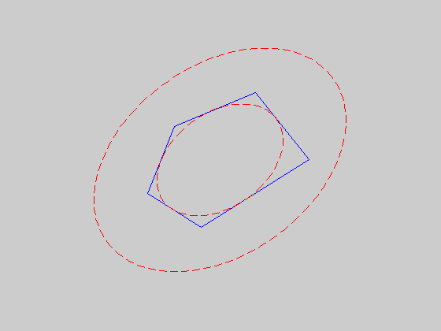

Maximum volume inscribed ellipsoid in a polyhedron
n = 2;
px = [0 .5 2 3 1];
py = [0 1 1.5 .5 -.5];
m = size(px,2);
pxint = sum(px)/m; pyint = sum(py)/m;
px = [px px(1)];
py = [py py(1)];
A = zeros(m,n); b = zeros(m,1);
for i=1:m
A(i,:) = null([px(i+1)-px(i) py(i+1)-py(i)])';
b(i) = A(i,:)*.5*[px(i+1)+px(i); py(i+1)+py(i)];
if A(i,:)*[pxint; pyint]-b(i)>0
A(i,:) = -A(i,:);
b(i) = -b(i);
end
end
cvx_begin
variable B(n,n) symmetric
variable d(n)
maximize( det_rootn( B ) )
subject to
for i = 1:m
norm( B*A(i,:)', 2 ) + A(i,:)*d <= b(i);
end
cvx_end
noangles = 200;
angles = linspace( 0, 2 * pi, noangles );
ellipse_inner = B * [ cos(angles) ; sin(angles) ] + d * ones( 1, noangles );
ellipse_outer = 2*B * [ cos(angles) ; sin(angles) ] + d * ones( 1, noangles );
clf
plot(px,py)
hold on
plot( ellipse_inner(1,:), ellipse_inner(2,:), 'r--' );
plot( ellipse_outer(1,:), ellipse_outer(2,:), 'r--' );
axis square
axis off
hold off
Calling SeDuMi: 30 variables (2 free), 21 equality constraints
------------------------------------------------------------------------
SeDuMi 1.1 by AdvOL, 2005 and Jos F. Sturm, 1998, 2001-2003.
Alg = 2: xz-corrector, Adaptive Step-Differentiation, theta = 0.250, beta = 0.500
Split 2 free variables
eqs m = 21, order n = 21, dim = 40, blocks = 8
nnz(A) = 65 + 0, nnz(ADA) = 301, nnz(L) = 181
it : b*y gap delta rate t/tP* t/tD* feas cg cg prec
0 : 1.09E+000 0.000
1 : -1.14E+000 2.86E-001 0.000 0.2627 0.9000 0.9000 2.64 1 1 8.2E-001
2 : -7.37E-001 7.53E-002 0.000 0.2630 0.9000 0.9000 1.53 1 1 1.8E-001
3 : -9.44E-001 5.13E-003 0.000 0.0681 0.9900 0.9900 0.89 1 1 1.2E-002
4 : -9.52E-001 1.90E-004 0.000 0.0371 0.9900 0.9900 1.01 1 1 4.4E-004
5 : -9.52E-001 4.50E-006 0.151 0.0237 0.9900 0.9900 1.00 1 1 1.1E-005
6 : -9.52E-001 3.41E-007 0.273 0.0757 0.9900 0.9166 1.00 1 1 8.9E-007
7 : -9.52E-001 1.73E-008 0.383 0.0508 0.9900 0.9906 1.00 1 1 5.1E-008
8 : -9.52E-001 4.32E-009 0.000 0.2496 0.9028 0.9000 1.00 2 2 1.2E-008
9 : -9.52E-001 1.08E-010 0.386 0.0251 0.9900 0.9894 1.00 2 2 6.8E-010
iter seconds digits c*x b*y
9 0.2 Inf -9.5230750989e-001 -9.5230750977e-001
|Ax-b| = 2.8e-009, [Ay-c]_+ = 2.3E-011, |x|= 5.8e+000, |y|= 1.8e+000
Detailed timing (sec)
Pre IPM Post
2.003E-002 1.602E-001 1.001E-002
Max-norms: ||b||=2.474874e+000, ||c|| = 1,
Cholesky |add|=0, |skip| = 0, ||L.L|| = 1136.81.
------------------------------------------------------------------------
Status (cvx_status): Solved
Optimal value (cvx_optval): 0.952308
